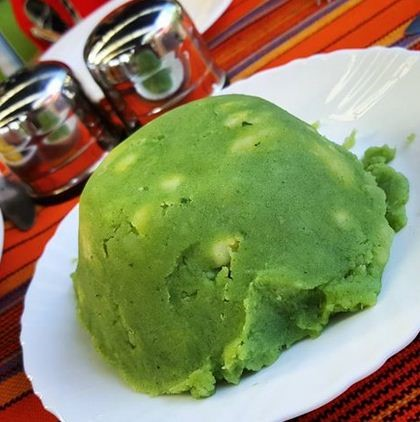

Mokimo
Mokimo Recipe(Kikuyu fav meal)

Introduction
For many years, mokima has been wakikuyu favourite meal. Its requires some specialized skill
to pull the most mind shocking meal of the year.
Many people love it and appreciate how tastey it is.
Well, being a kikuyu myself I will guide you through step by step procedure to prepare the best mokimo and you'll appreciate your time
after all this.
Ingredients
- 20 Pumkin leaves
- 10 large Potatoes
- Soft maize and beans mixture
- 5 pieces of raw peeled bananas
- 2 tbspn of salt
- A tbspn of tumeric for color
- 1/4 of tender meat
- 100 ml of cooking oil
Cooking Steps/Procedure
- Step 1
Put the pumpkin leaves or spinach in a blender, add a little water and shred for 30 seconds.
- Step 2
In a pan, fry the onions till golden brown, add desired spices then set aside.
- Step 3
In a sufuria, mash together the maize and potatoes together using a wooden stick until all is combined.
Add the blended spinach to give color and flavour.
- Step 4
Over medium heat, mix together the mashed potatoes and onions. Mix well.
- Step 5
Serve while hot with beef, cabbage or matumbo.
- Step 6
Time to enjoy the super meal deng!!!!!!!!!!!!!!!
To go back to main page click here